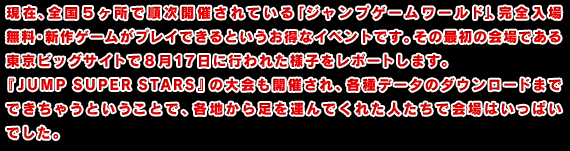
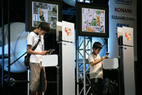
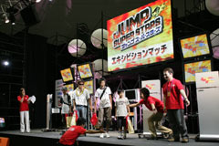
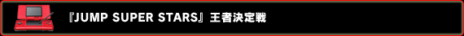
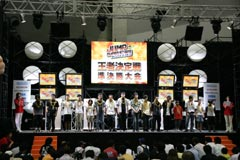
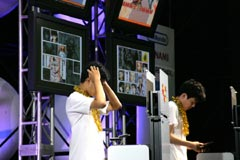
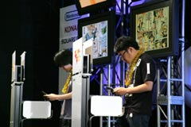
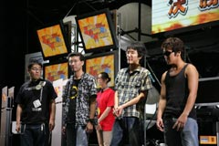
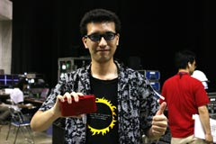

特設ステージでは、『JUMP SUPER STARS』の魅力や遊び方、ちょっとしたヒントなどを詳しく解説する『プロモーションステージ』と『まるわかりステージ』が開催されていました。
会場から参加者を募り、直に触れてもらうことでその楽しさを伝えるというエキジビジョンマッチのコーナーがスタート、参加者の年齢はまちまちだけど、みんなこのゲームに興味津々で集まった人ばかりです。バトルは４名で行われ、既にやり込んでいる人、また初めて触れる人などが混ざってのバトルロイヤルとなりました。
|


|



午後からスタートしたステージイベントでは、『JUMP SUPER STARS』の大会が開催！
午前中から準決勝へ向けた予選が行われており、発売後一週間程度という短い期間のなかで腕を磨いた参加者たちが腕を競い合いました。
予選を勝ち残った16名が準決勝に進出、それぞれ４名ずつの４ブロックに分かれて各ブロック１名ずつが決勝進出。
そして決勝戦では勝ち残った４名がステージ上で激突する、という流れで大会が行われました。
優勝者には"ニンテンドーＤＳ ＲＥＤ ジャンプスペシャルエディション"が授与されるということで、参加者の気合いも並ではありません。
激戦をくぐり抜けて、栄光を手にしたのは誰!?
|


|
ルールは以下の通り。
・ポイント制
・参加者の作ったデッキ使用可
・アイテム使用可
・時間は60カウント
・決着がつかない場合はサドンデス突入

予選から準決勝、そして激戦の決勝を勝ち抜き、みごと優勝を手にしたのはT-1000さん。
たくさんの友達同士でエントリーし、しかし友人といえど容赦なく倒し続けて勝ち残りました。
なんでも発売直後からやり込み続け、この大会優勝を目指していたそうです。
使用キャラはジャガーさんとアラレでトップを取り、優勝商品の"ニンテンドーＤＳ ＲＥＤ ジャンプエディション"を獲得。笑顔でコメントを寄せてくれました。

「純粋に嬉しいです。寝る間も惜しんで優勝目指して練習していたので、優勝できたのが本当に嬉しいです。このゲームの全国大会があったらいいのにと思ってます」とのこと。
T-1000さん、優勝おめでとうございます！
|
|